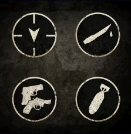

содержание
Навыки выживания
Навыки выживания

Навыки выживания — способности в мультиплеере игры The Last of Us, которые дают
временное или постоянное преимущество над врагом, повышая характеристики персонажа или же
наделяя его особыми показателями.
Тринадцать навыков выживания доступны в игре изначально, вдобавок к ним можно приобрести три комплекта навыков выживания по четыре-пять навыков в каждом, всего также тринадцать. Каждый такой комплект стоит 189 рублей в Playstation Store или Playstation Network. Игрок также имеет возможность приобрести каждый навык по отдельности за 49-99 RUB, а некоторые даже предоставляются бесплатно.
Дополнительные навыки
Тринадцать навыков выживания доступны в игре изначально, вдобавок к ним можно приобрести три комплекта навыков выживания по четыре-пять навыков в каждом, всего также тринадцать. Каждый такой комплект стоит 189 рублей в Playstation Store или Playstation Network. Игрок также имеет возможность приобрести каждый навык по отдельности за 49-99 RUB, а некоторые даже предоставляются бесплатно.
Список доступных навыков
- Драчун
- Искусник
- Марафонец
- Меткий стрелок
- Неслышимый
- Первая помощь
- Реаниматор
- Снайпер-пистолетчик
- Собиратель
- Соколиный глаз
- Стратег
- Чуткий слух
- Эксперт-подрывник
Список платных комплектов
Ситуативные навыки выживания
- "Бдительность"
- "Мусорщик"
- "Проворство"
- Стойкость"
Профессиональные навыки выживания
- "Метка"
- "Палач"
- "Стрелок"
- "Эксперт по бомбам"
Навыки выживания «Управление риском»
- "Волк-одиночка"
- "Второй шанс"
- "Мастер на все руки"
- "Смертельная сноровка"
- "Счастливый случай"